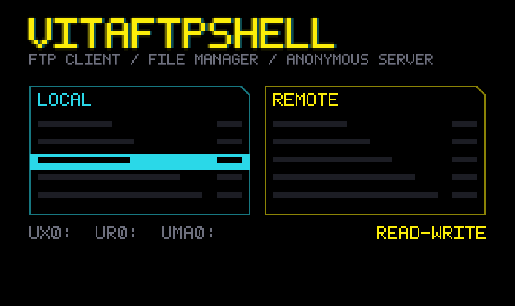

Launcher and LiveArea art — shipped record (b83)
Launcher and LiveArea art — shipped record
Build b83. The images below are the files in sce_sys/, at true
size wherever the page allows it. Decisions D103 and D104; geometry in
2026-11-17-launcher-art.md.
Regenerate with tools/art/build_launcher_art.py.
Launcher icon
sce_sys/icon0.png — 128×128, indexed 8-bit, 24 colours
128 px, 1:1
32 px, launcher row
bubble mask, 26 px cut
4×, for detail
Three sheets: dim back, yellow middle, cyan front document. VTPS
runs vertically down the front sheet in the app's 5×7 face; four ruled lines sit on the
right. The 83×83 mark is centred, so no corner cut reaches it.
LiveArea background
sce_sys/livearea/contents/bg.png — 840×500, indexed 8-bit, 36 colours

840×500, 1:1. The gate bar covers the bottom of the page; the lowest element ends at y 382.
Gate thumbnail
sce_sys/livearea/contents/startup.png — 280×158, indexed 8-bit, 28 colours
280×158, 1:1. Sits beside START.
Boot frame
sce_sys/pic0.png — 960×544, indexed 8-bit, 23 colours
960×544, 1:1. Reports nothing: no progress, no version.